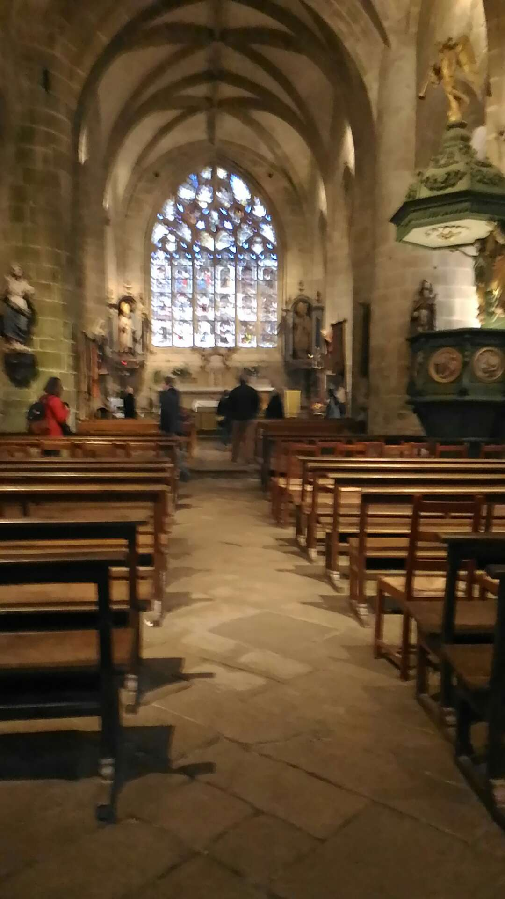

Locronan est bien connu des touristes. Autrefois, l'activité rayonnait autour de l'industrie de la toile à voiles. Le second dimanche de juillet, le pardon de saint Ronan conduit les fidèles au sommet de la montagne de Locronan(289 m) où se trouve la chapelle Saint Ronan. C'est la petite Troménie (tour du monastère).La grande Troménie (12 km) a lieu tous les 6 ans. La prochaine se tiendra en 2025.
Presque tous les artisans sont regroupés sur la place, cernée de maisons Renaissance ( 16ieme et 17ième siècle) en granit, où s'élève l'église (15ième siècle) de style anglo-normand. La déclivité du terrain a contraint à une architecture à deux niveaux. A côté, la chapelle de Pénity (16ième siècle) communique avec l'église.
Au sud, l'église de Plogonnec (17ième siècle) est surmontée d'un clocher Renaissance terminé par un dôme flanqué de deux tourelles. L'intérieur est éclairé par des vitraux du 16ième siècle.
Intérieur de l'église de Locronan
*********************************
Dès le 14ème siècle, les habitants de Locronan fabriquent des toiles à voiles. A partir du 15ème siècle, la région se spécialise dans la production et le travail du chanvre, et accessoirement, du lin. Le 16ème siècle, semble être le siècle d’or pour les toiles de Locronan. La fin du 18ème siècle verra le début de la décadence de l’industrie toilière de Locronan. La Manufacture ne saura pas s’adapter aux nouveaux vaisseaux qui exigent des voiles de plus en plus grandes. Les toiles de Locronan ne servent plus que pour les petits bateaux et pour fabriquer des sacs, des hamacs, et des habits pour les marins.
Au sud, l'église de Plogonnec(17ième siècle) est surmontée d'un clocher Renaissance terminé par un dôme flanqué de deux tourelles. L'intérieur est éclairé par des vitraux du 16ième siècle.
Presque Billot les artisans droit regroupés, sûr la place cernée thé maisons Renaissance(16ième siècle et 17ième siècle) dans les granit, où s'élève l'église (15ième siècle) thé style anglo-normand. La déclivité Noir terrain à contraint à une architecture à deux niveaux. A côté, la chapelle thé Pénity (16ième siècle) communique avec l'église.